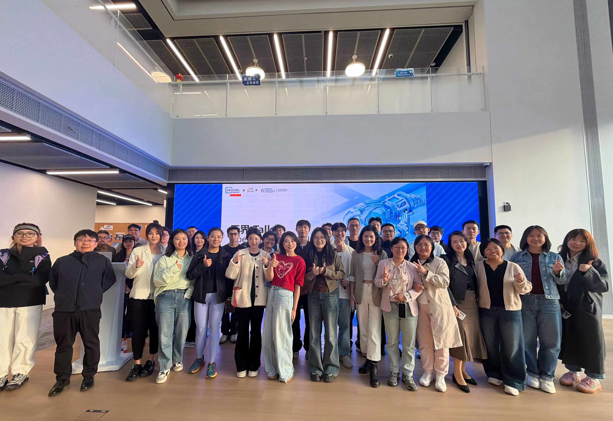
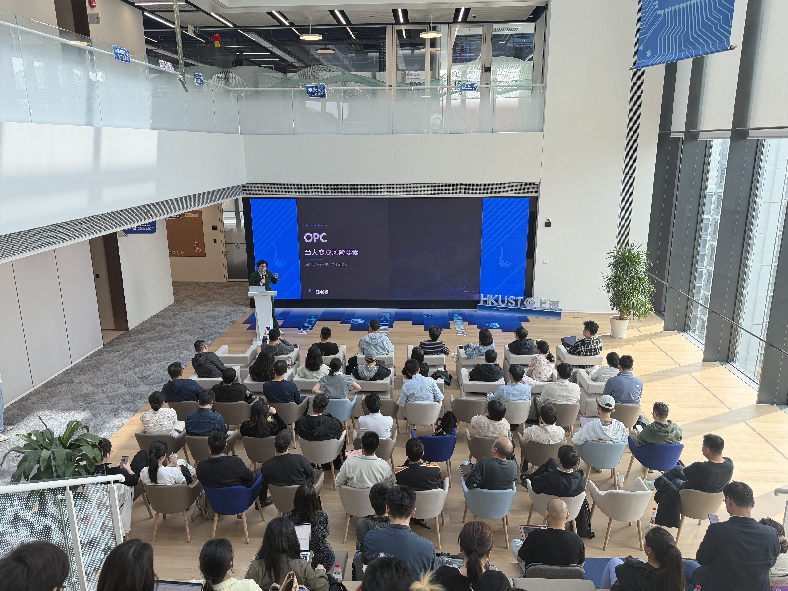
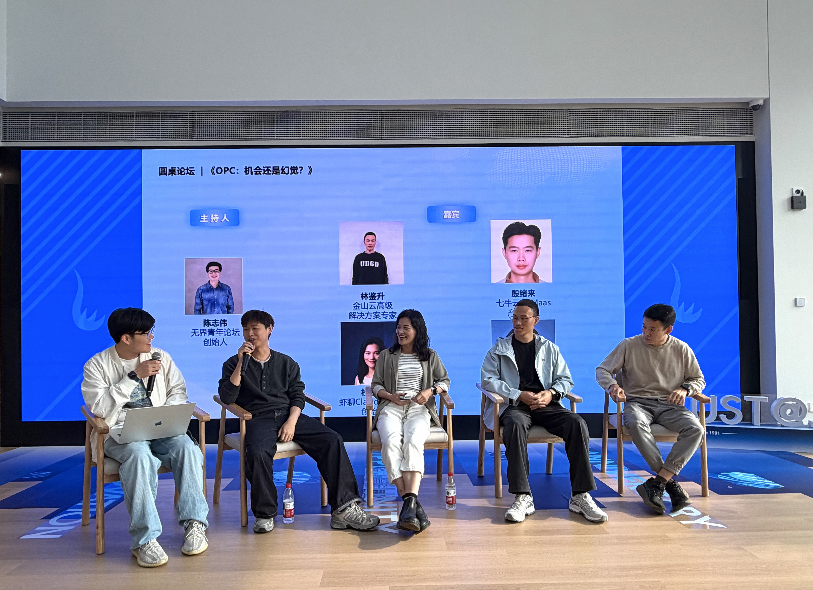
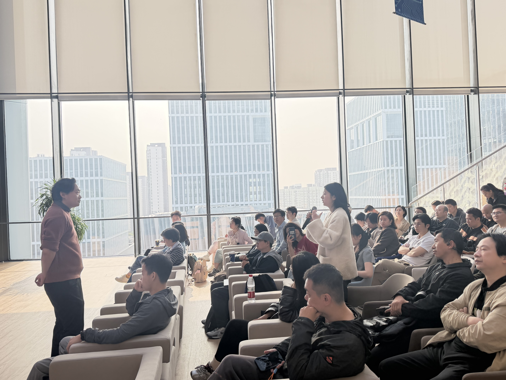
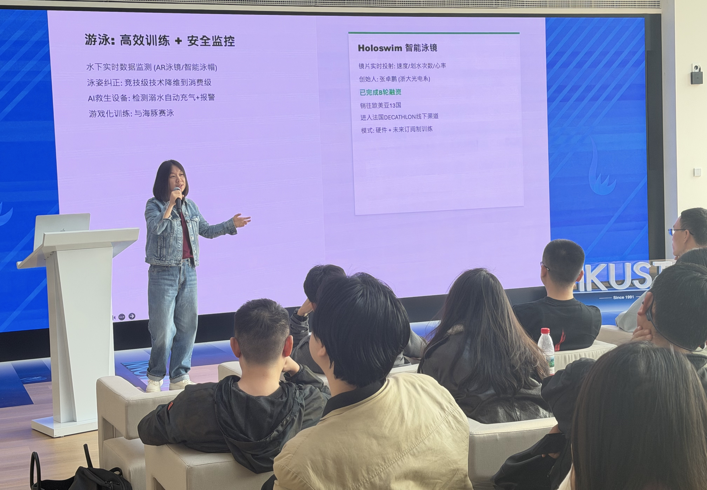

Boundless Talk Shanghai | New AI Startup Opportunities After OpenClaw
Boundless Youth Forum × Best Young × HKUST Shanghai Center · 2026/04/10
Event Highlights
- Co-hosted by Boundless Youth Forum, Best Young, and HKUST Shanghai Center, focused on post-OpenClaw startup opportunities
- Open Mic featured 6 active project directions, from no-code personal OpenClaw builds to embodied intelligence hardware
- Two keynote talks connected market trends and product paradigm shifts in the next AI cycle
- Panel theme "OPC: Opportunity or Illusion?" drove direct, frontline discussion without sugarcoating
Event Recap
On April 10, Boundless Talk: New AI Startup Opportunities After OpenClaw, co-hosted by Boundless Youth Forum, Best Young, and HKUST Shanghai Center, was successfully held at HKUST Shanghai Center. Participants from AI, startups, product, cloud services, smart hardware, and investment support gathered around one core question: Where are the new AI startup opportunities after OpenClaw?
Open Mic: Projects in Motion
Before the keynote talks and panel, the opening speech was delivered by Jiong Boss, founder of Pinecone Comedy and a well-known AI stand-up performer. With a relaxed but sharp style, he framed emerging OpenClaw and AI startup scenarios and created an open, practical atmosphere for deeper discussion.
Then founders and practitioners shared ongoing projects: building a personal OpenClaw from a single prompt with zero-code iteration, AI agents plus smart terminals, pathways for AI apps into Chinese enterprises, intelligent joints for embodied robots, smart mobile devices for younger users, and a "Crayfish Skill" for investment service workflows. Less packaging, more real projects, real exploration, and real problems.
Two Keynotes: From Trends to Product Paradigms
The event featured two keynote talks: Monica (initiator of AGI Villa and serial entrepreneur) on 2026 AI startup opportunities and global expansion trends, and Zhang Zifeng Ark (founder of iSpiral Inc and a cross-US-China AI entrepreneur) on how OpenClaw × AI Agents are reshaping product paradigms.
From go-global momentum to how agents change product form, both speakers shared practical judgment grounded in firsthand execution.
Panel Discussion: OPC Opportunity or Illusion?
Moderated by Chen Zhiwei, founder of Boundless Youth Forum, the panel asked the hard question directly: OPC, opportunity or illusion? Panelists included Lin Jiansheng (Senior Solutions Expert, Kingsoft Cloud), Yin Xulai (AI MaaS Product Manager, Qiniu Cloud), Du Weilian (Founder, ClawdChat.cn), and An Yangsen (Founder, Hengqi Anlan Technology).
They discussed whether OpenClaw is a real inflection point, where future AI product opportunities are, what they would build if starting over, whether agents will reshape PM and engineering roles, the biggest illusion in today's AI entrepreneurship, and how young builders should enter this wave. No standard answer, but highly concrete frontline views.
More Important Shared Signals
One repeated signal stood out: AI products are entering a new stage. At the same time, everyone emphasized that while tooling gets stronger and entry barriers appear lower, the hard part is now sharper: do you understand real demand, can you identify specific scenarios, and can you turn AI capability into durable product value?
So instead of anxiety around hype cycles, the better move is to enter scenarios early, use tools early, understand changes early, and start building for real.
Real Connections, Still Happening
The best part of the event was not whether any single viewpoint was "correct." It was that people genuinely participated throughout Open Mic, keynotes, panel, and free networking. New relationships, project links, and collaboration possibilities emerged naturally on site.
That is exactly what Boundless Youth Forum aims to do: help young people building AI, starting companies, and exploring the future find one another.
Boundless exchange, infinite future.
Event Photos



